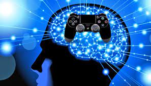
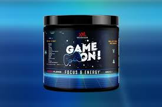
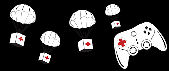
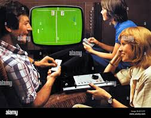
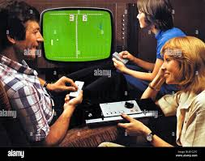

Regular gameplay is crucial for your gaming setup's physical and mental well-being. Just like any activity, gaming allows you to engage and have fun, but it's important to strike a balance to maintain good health. Without mindful gaming habits, gamers can face various issues, including eye strain, sedentary lifestyle effects, and potential negative impacts on mental health.
To keep your gaming experience enjoyable and fulfilling, make sure to take breaks, stretch, and stay hydrated. Explore a variety of game genres, participate in online communities, and consider incorporating physical activities into your routine. Remember, each gamer is unique, so find a balance that works for you to ensure a long and satisfying gaming journey.
Just like in real life, gamers need proper nutrition to stay focused and thrive in the gaming world. Nutrition is the process by which gamers obtain fuel for sustained gameplay, mental focus, and overall well-being. A balanced gaming diet that provides essential nutrients is crucial for maintaining optimal performance and enjoyment in gaming sessions.
There are several main types of nutrients that gamers need to consume:
Each of these nutrients plays a vital role in maintaining focus, energy, and overall well-being during gaming sessions. Balancing the right types of gaming nutrition can enhance your gaming experience and contribute to a healthier gaming lifestyle.
Not all gamers have the same dietary requirements. For example, competitive gamers may have different needs than casual gamers. Additionally, different gaming genres may require different nutritional approaches. It's essential to understand your gaming habits and tailor your diet accordingly.
Providing gamers with a balanced diet that meets their specific needs is essential for maintaining their performance and well-being. This can be achieved by incorporating a variety of gaming-friendly foods that provide the necessary nutrients. For example, a balanced gaming diet might include a combination of energy snacks, hydrating drinks, and brain-boosting foods.
Hydration is perhaps the most important aspect of gaming nutrition. It is necessary for maintaining proper bodily functions and mental focus. Providing gamers with access to water and hydrating drinks is essential for their performance and overall well-being.
Proper gaming nutrition is essential for maintaining the performance and well-being of gamers. A balanced diet that provides all the necessary gaming nutrients is crucial, and different gamers have different requirements. By understanding the nutritional needs of gamers, we can help ensure that they have a happy and healthy gaming experience.
As gamers, it's important to be prepared for emergencies and know what to do if your gaming setup is facing issues. Gaming first aid is the initial care given to a gaming system before professional technical help is obtained. Knowing basic technical skills can help you keep your gaming setup safe and prevent further issues.
Some common emergencies that gamers may experience include:
For each emergency, there are different steps you can take to provide first aid. For example, if your system crashes, you may need to troubleshoot software issues. If your hardware malfunctions, you might need to check connections and components.
 
